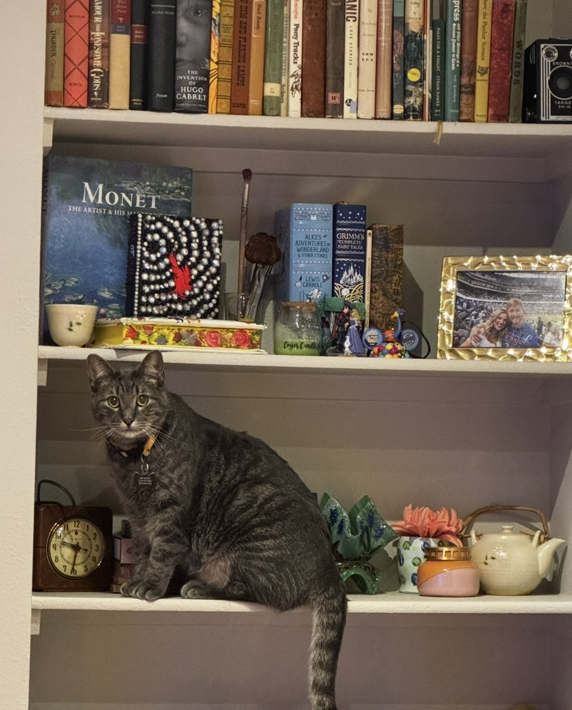

Not every memory comes from a big adventure. Some of my favorite moments happen on completely ordinary days. Whether they're lounging around the apartment or keeping me company while I study, Gus and Kippy make every day a little more fun.
Looking back through these pictures reminds me that the best memories are usually the small ones. They don't have to be exciting they just have to be togeher.